Feng Xia
China's Nationalism
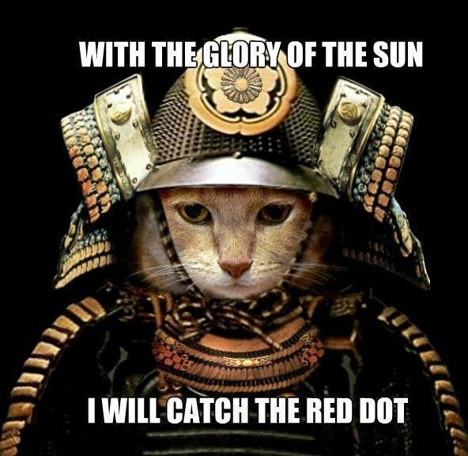
What is a nationalism? Is it a bad thing, or a good thing? The word always reminds me the dawn of WWII that Japan empire was, in my history education, powered by its fanatic nationalism spirits to conquer the world and to bring prosperity to its new lands.
What made …
Juju local LXD
Using Juju's LXD provider is the least-hassle way to start an experience of Juju and its charms. However, if you have done charm development for a while, you know making a one line of code change, deploying charm, then wait to see the new code got executed ← it's good 5-10 …
sharing economy
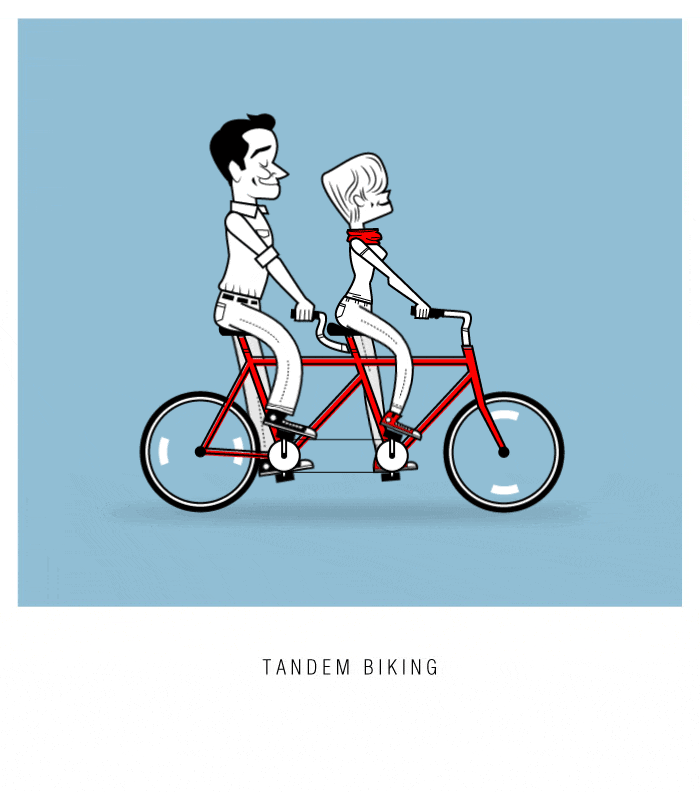
Sharing economy is hot. Looking around, one can't help feeling just about everything can be shared. But then, you can't help asking yourself, "where does it end?"
Really, so cars can be shared, houses can be shared, stools can be shared, bikes can be shared... so what can not be …
People psyche
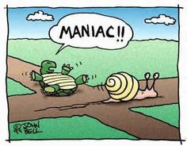
Have you observed something that ppl do, and you just wonder what the hell*? Yes, I find human behavior very puzzling. Maybe it's just me that is not connected with surroundings and felt isolated. But seriously, there are just these things that ppl do that I can't help thinking the …
Modern slavery

I'm convinced now that the number one problem I am annoyed by the modern Chinese culture is that it create self-contradictory person. They speak in logics however they see fit without being aware of that two points coming out of their mouth are actually contradictory. Take it further, they took …
Art, a thought

Finished reading Kenneth Clark's Civilisation. I can't say I actually understand the book, because nearly every item he was talking about and describing with passion and logic, I had little idea. I barely recognized some names, and very little of the artifacts. Sculptures, some; paintings, nearly none; background history and …
Tencent & Opium
What does IT system bring
After long thoughts, I believe I have come to the conclusion that there are only three things that technology should bring, would bring, and should their objectives:
-
information repository: everything is saved, time stamped, digitized, and probably even structured.
-
efficiency: this comes from the fact that data inputs are sanitized …
Lost jobs, not really

These days, everywhere you turn, there is talk about AI, and one primary theme is the human fear of being replaced by robots, thus resulting in huge waves of layoffs and job loss, which then leads to social turmoils, revolutions, and government collapses. Horrible.
But if you think of it …
Self-reflection
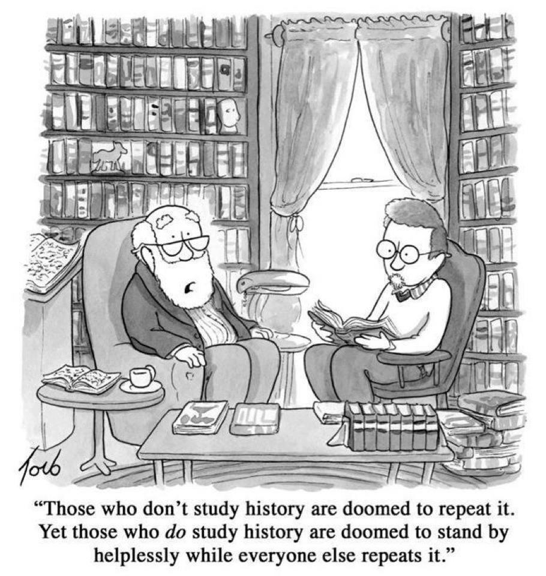
Watching the Civilisaiton Youtube, what a fantastic topic and description of western civilisation! This is quite interesting especially with the backdrop of Jared Diamond's Guns, Germs, and Steel, which I found it godly convincing as I was first introduced to think about the history of human civilisation through his documentary …
Marketing
Man wasn't that annoying! Listened to this book on the way to outlet yesterday, and the language it used annoyed the shxxt out of me. Let me explain why.
Total attention
The content is actually fine. There is a total sum of attention
consumers can provide:
total consumer attention=num_of_consumer …
Luck
I was listening to this talk on Youtube about luck, and that got me thinking.
It's a cliche when people talk about luck, and someone gets lucky, or unlucky. It feels it is something we have no control over, and it is just randomly happened, for good and for bad …
Math, the decline of the US
Came across an article tonight. The argument is actually not new — that US is now in decline and the only hard fact that no one is disagreeing, its leadership in technology, especially in computer related stuff, is shaken. The evidence, or its supporting argument, comes in two folds:
- that the …
Data, Integrity
The first time reading "Trust" by Francis Fukuyama, I was deeply impressed by his distinction that Chinese trust is implied, such as inner circle of immediate family, friends, extended through marriage... while the Western version is explicit, for example, the credit score system.
Now we have data

With China's economy …
Can you innovate?
This has been a topic on my mind for quite some time now ever since I worked in Shanghai in 2016 and witnessed things that quite annoyed me, especially from a software engineer prospective.
So the backdrop is that Chinese people have been encouraged by the country's phenomenal success in …
Charm Ansible integration
Let's face it. Ansible has the mouth (and market) share these days. For our modeling purpose, we are to utilize its procedural strength to carry out actions, which provides an abstraction instead of coding in charm's Python files.
Design objectives:
- Design as reusable layer(s)
- Be compatible with Ubuntu and …
AI

I have pretty low tolerance of BS. The hot topic of AI bothers me a great deal, because it is being discussed by too many ppl who have no context. It is becoming just another buzz word rolling off your tongue to make you sound sophisticated and smart. But no …
Love till past
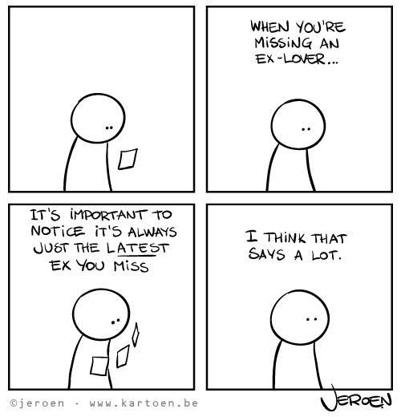
很多人都i知道，浪漫的爱情里，两个人都怕时间太短，都说要长相守，两不忘。 最浪漫的话，是陪你慢慢变老。 Then this morning I had another thought.
All families have some burdens that trouble them, regardless how wealthy they are, how wonderful they look to outsiders, how much love they have for each other. There just isn't one single, perfectly happy, worry-free, trouble-free …
Teahouse
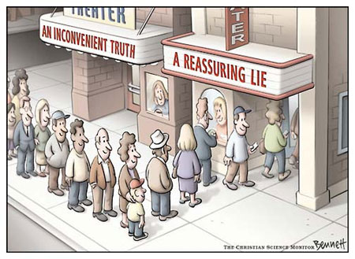
This is an interesting thought. I am listening to this talk show about 三里屯, and guests are discussing the come and go of bars in this place. For those who don't know this place, it's a section in BJ that has a lot of bars which aggregated young ppl and …
A color
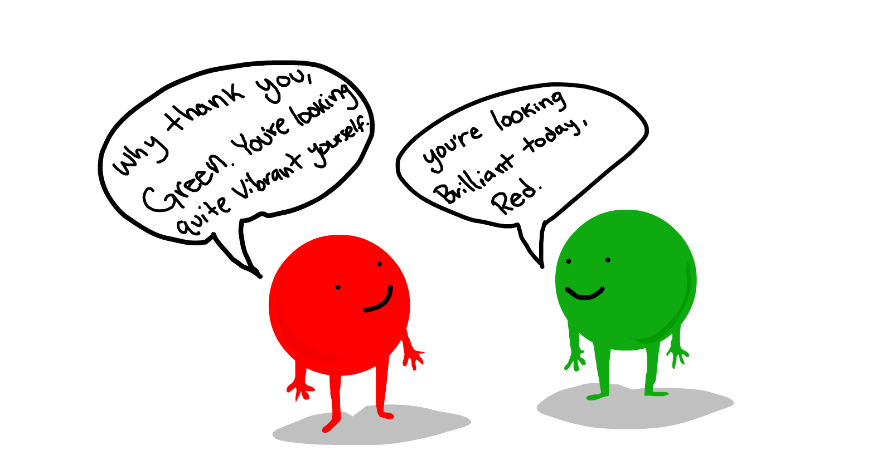
This is interesting. I am at the nursing home eating, and suddenly realized the color of the book cover that I'm reading is nearly identical to the color of the food containers. You know what? I have never noticed this color before, nor would ever thought I will give it …
Zebra line
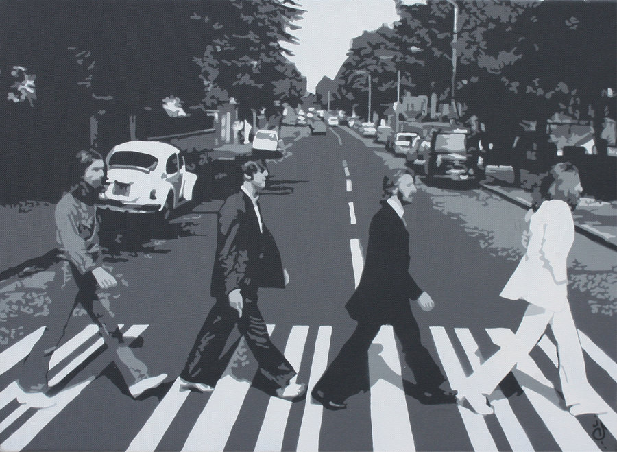
Walking on the street in SH, I just realized what is wrong with this place. So I was walking across this giant intersection, and I do mean giant because everytime I had to put in the high gear and used my dash speed at the first moment the walking sign …
Sound of silence

What is everybody looking for? Identity? I see people in the middle of the social rung are all searching for something. Waking up this morning and walking on the street, the place was certainly busier after the holiday, more ppl, more cars, more purpose. Do ppl at the bottom of …
Girl's love
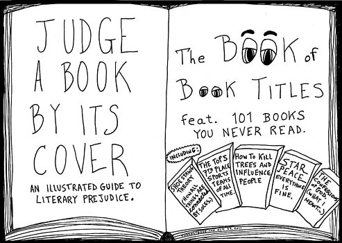
Watching all the little kids running around at this public square in a summer evening, I was thinking to myself, "boy, that's a lot of kids. And each one of them came from a man and a woman, and they had to have sex at some point to make this …
Charm layer-basic
Have you ever wondered what layer-basic is for? and why every charm needs to include it? In this article we will take a look at its code base to decipher this mystery.
Hooks
We already know hooks are hardcoded. Juju expects certain hooks and hook sequence is always executed in …
Irresponsible response
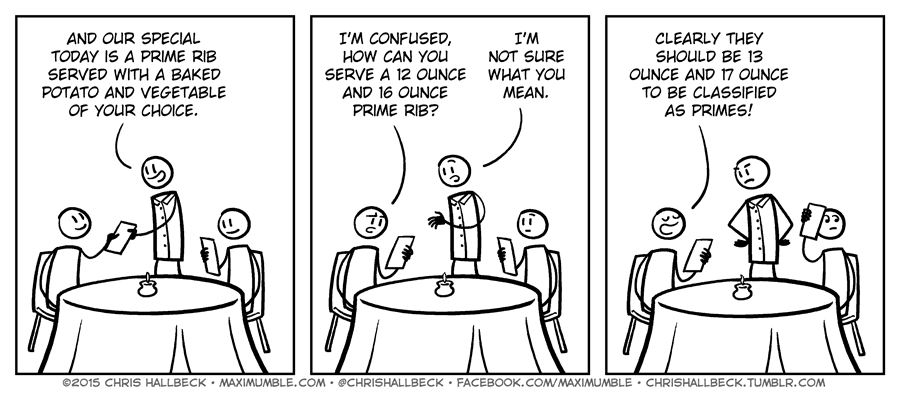
Doesn't the title sound like a tongue twister? That's where the irony is. How can you make a response irresponsible? and what does it give? Any harm done? Does it matter? What does it mean when it happens? Why do ppl give such response? and why would ppl accept them …
Consume the future

I was thinking about future value this morning. Why? because I was thinking about this Chinese phrase, 寅吃卯粮, which means that one consumes savings meant for future use. The term bears a negative emotion that is used to criticize someone or some action that is irresponsible (in view of the …
Sync vs. Async
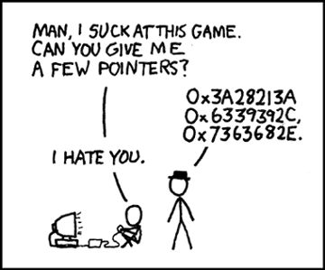
Irrelevant
Sync vs. Async. I have been thinking this to myself and have involved quite a few discussions with smart (and mostly young) developers which from time to time makes me wonder whether there is a definite answer for this at all.
One thing I can fairly state is that …
父亲一家

爷爷，奶奶，幸福邨，夏炽宇（九弟）
父亲叫爷爷“大大”，奶奶“亲妈”
上海人。老家在青浦朱家角。爷爷是地主，后来战乱到了上海，在上海华山路幸 福邨租了房子，地点离上海交大本部2站路。我父亲最小，上面都三个哥哥一个 姐姐，我分别介绍。他们叫他九弟，中间的几个夭折了。他长大的时候家里经济 应该很拮据，主要靠大哥的收入维持，所以他从那时候就养成了节俭的习惯，后 来经历建国来的那些年代，加上后来分配到了东北，那里虽然当时是中国的工业 基地，但生活条件与南方差距甚远，所以更是对自己的生活变得很苛刻。
幸福邨
父亲还记得自己以前的事情。他说起幸福邨的日子，说起住在那里的人，很多时 候还以为家还在那里。幸福邨是联排屋，我大学的时候家还在那里，整整的一栋 都是，三层，一大家子人都在，以前爷爷奶奶住在顶层，不大下来，我没有见过 奶奶，那天说起亲妈 …
What a day
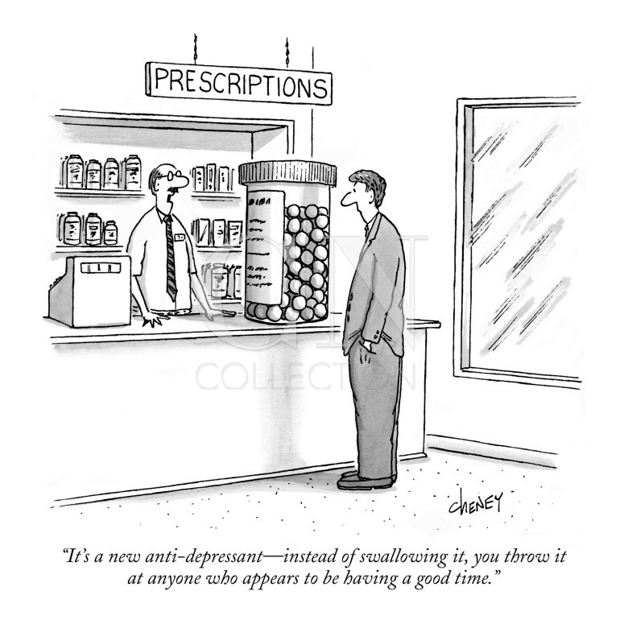
I was sitting in this underground little food court, breathing the muggy air, eating a spicy food, watching people coming in and out, full of life, full of noise, full of hope. Yet, I kept wondering that everybody here has one type of headache or another in their lives, just …
Nursing home evaluation
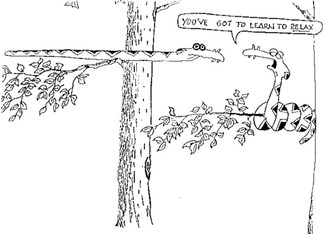
Due to Dad's deterioating condition, nursing home becomes a necessary option that we must consider as a way to handle this situation. The following are notes most based on recollection and first impression so that they are likely biased and are certainly opinionated.
Sites visited:
- 北京金手杖: recommended by my college …
My la la land
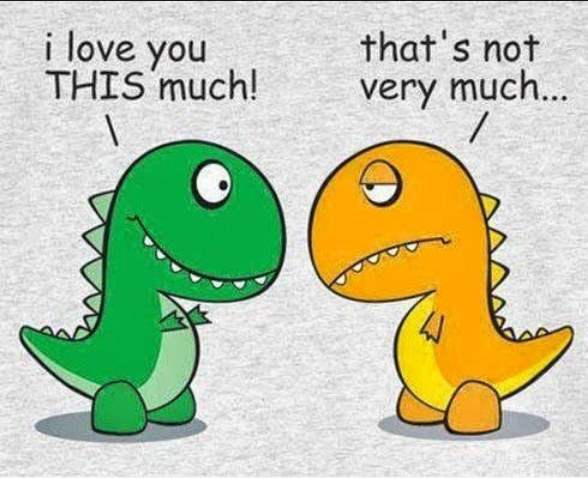
Maybe it's the travel, maybe it's the stress of my dad's worsening health condition, maybe I'm tired from all these and trying the impossible without knowing the loss is done already. But I know why I'm sad. The life went the way I hoped but myself couldn't bear the thought …
Bye Bye GFW
The GFW is nothing but an anti-humanity instance that blocks knowledge transfer and information sharing in the 21st century when brain is the competition advantage and this gov decides to sacrifice all the future with a vain hope that creativity can continue to flourish while its citizens are excluded from …
Charm chained states
This charm is created to demonstrate chained states using Juju charm. Chained states is essentially mirroring a pattern of any sequential execution in a workflow. Potentially each execution block can also have conditions to set the next state, even though this type of knowledge should be exposed outside function element …
You got mail

After becoming an Emacs user for the last few months, I acquired a burning desire to migrate as much as my daily text editing activities into Emacs environment, in particular, emails.
Having tried offlineimap for a bit, I ended up battling its configuration to make it work (sort of) with …
MAAS vs. Ironic
This article is to analyze Openstack Ironic and Canonical MAAS, both are tools to turn baremetal into a pool of managed resources that are ready for consumption by upstream srervice. On the highest level, a baremetal is either managed or not-managed. Being managed requires that the manager is aware of …
Baremetal provisioning
Everyone of us has installed an operating system to a computer at some point in life. It is easy to perceive inserting a disk or USB key to make this happen because the OS files are there. A fancier version is to boot from network using PXE boot option, which …
Openstack Ironic
This article is an outcome of my writing a Juju-Ironic provider. The plan was to first figure out Ironic APIs that will achieve what Juju provider needs — start an instance on demand, then build those REST requests into Juju provider code. After playing with Ironic API and Openstack's Devstack for …
Introduction of Juju charms
Juju deploy and Provider
In this article, we have demonstrated how Juju deploys a charm, including what makes a node eligible as a target and what files will be put on by the deployer.If you recall, there were four steps in a deploy process:
- Add a new machine to the cloud environment. In …
Emacs
What a wonderful editor!
I wouldn't even call it an editor because it can do so much beyond text editing. Still on the learning curve to get a grasp of what it can do in my daily development workflow. Here is to document the init.el that I'm using. It's …
Spectrwm
My favourate desktop manage which tiles windows neatly so I never worry about cluttered view while opening and closing windows.
Here is the config file I'm using.
# PLEASE READ THE MAN PAGE BEFORE EDITING THIS FILE!
# http://opensource.conformal.com/cgi-bin/man-cgi?spectrwm
# colors for focussed and unfocussed window borders …Juju charm deployment
We have covered Juju's bootstrap phase. In this article, we will continue our research into another important function — juju deploy.
Deploy will command a node to pull down requested charm and install whatever needed based the charm's instruction. As the bootstrap research, I'm interested in the internal mechanism of this …
Juju bootstrap process
The very first command user will encounter is the juju bootstrap. It
createa a special machine — state controller, machine-0,
control node, etc. — naming convention aside, it is the brain
that tracks others nodes in the cloud, applications installed and
their status.
Screencast
Through research I want to learn about its …
Juju charm model
This article is a high level view of Juju's internal modelings. For me it was fairly confusing when looking at its document which has an army of these concepts: charm, bundle, model, unit.... of course, each of them makes sense after a while. Its terminology page helps on understanding individual …
Targets in MAAS lab
After setting up the MAAS server and its subnet, bringing up a target node is simple.
All nodes must be on the same 192.168.8.0/24 subnet, and they must support PXE boot.
PXE boot
The MAAS machine functions as both the DHCP server and the TFTP server …
Setup a MAAS Virtualbox lab
SPA: World Snapshot
SPA: car leasing calculator
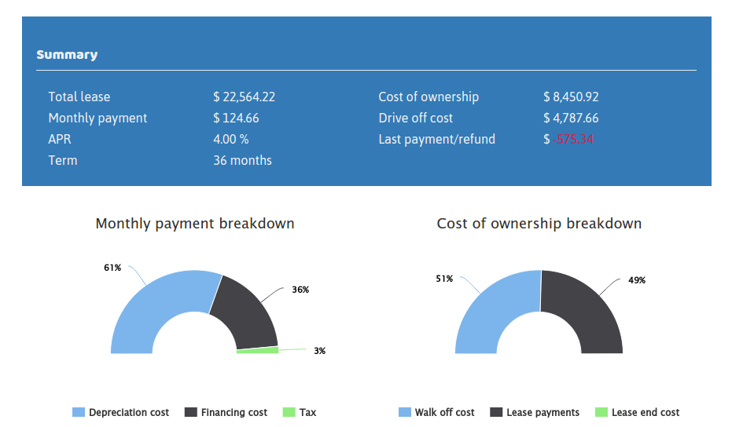
Car leasing rooted in my own experience while researching for a new car. After putting together an Excel to model the car leasing process, I started to think how to make the lesson learned available for other buyers. Also, I figure this …